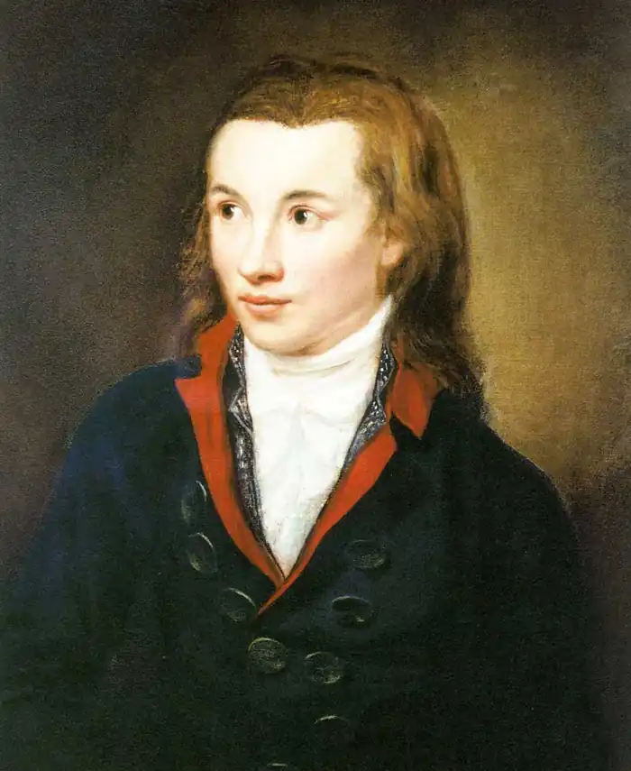

День народження: 02.05.1772 року
Місце народження: Видерштедт, Німеччина
Дата смерті: 25.03.1801 року Оригінальне ім'я: Фрідріх фон Гарденберг Гарденберг Original name: Georg Friedrich Philipp Freiherr Hardenberg Біографія Яскравий представник німецького романтизму, Новаліс був вельми талановита не лише в літературному плані – багато він домігся і в науці. Вміння знаходити наукових догм і методиками застосування в самих несподіваних місцях зіграло ключову роль в його успіху. Народився Георг маєток Обервидерштед (Oberwiederstedt), на території нинішнього Арнштайна, Саксонія-Анхальт (Arnstein, Saxony-Anhalt), поблизу гір Гарц (Harz). Маєтком місце проживання родини його іменувалося не марно – Новаліс походив із стародавнього сімейства німецьких дворян. У великому генеалогічному дереві Георга значилося чимало видатних політичних діячів, начебто прусського канцлера Карла Августа фон Харденберга (Karl August von Hardenberg). Дитинство своє Новаліс провів у родинному маєтку; саме з цього маєтку починалося більшість його виходів в гори Гарц. Батько Новаліса, землевласник і керуючий соляними шахтами Генріх Ульріх Еразм Фрейхер фон Харденберг (Heinrich Ulrich Erasmus Freiherr von Hardenberg) по натурі своїй людиною був вельми побожною; місцева моравианская церква грала в його житті чи не ключову роль. У другому шлюбі з Августою Бернардиною фон Больтциг (Auguste Bernhardine von Böltzig), у нього народилося 11 дітей; другий – Георг Філіп Фрідріх – пізніше став відомий під ім'ям Новаліс. Перший час вихованням і освітою майбутнього філософа займалися приватні вчителі. Деякий час Новаліс провчився в лютеранській школі в Эйслебене (Eisleben), де осягав таємниці класичної літератури і риторики (предметів, в ті часи вважалися досить важливими). З 12 років Георг відповідав за власного дядечка, Фрідріха Вільгельма Фрейхера фон Харденберга (Friedrich WilhelmFreiherr von Hardenberg). В період з 1790-го по 1794-й Новаліс вивчав право в Єні (Jena), Лейпцигу (Leipzig) і Віттенберзі (Wittenberg). Іспити він склав з відзнакою. Під час навчання Георг встиг відвідати історичні лекції Шиллера (Friedrich Schiller); пізніше Новаліс і Шиллер стали близькими друзями. Були у філософа та інші відомі знайомі – він зустрічався з Гете (Johann Wolfgang von Goethe), Гердером (Johann Gottfried Herder) і Жаном Полем (Jean Paul) і дружив з Людвігом Тиком (Ludwig Tieck), Фрідріхом Вільгельмом Йозефом Шеллінгом (Friedrich Wilhelm Joseph Schelling) і братами Фрідріхом (Friedrich) і Серпнем Вільгельмом Шлегелями (August Wilhelm Schlegel). У жовтні 1794-го Новаліс працював секретарем Серпня Колестина Юста (August Coelestin Just); Юст був йому не тільки начальником, але й другом і, згодом, біографом. Приблизно в цей же період Новаліс познайомився з 12-річної Софі фон Кюн (Sophie von Kühn); 15-го березня 1975-го Новаліс і 13-річна вже Софі побралися. У січні Новаліс став аудитором на соляних шахтах Вайсенфельса (Weißenfels). У період з 1795-го по 1796-ой Новаліс працював над науковою доктриною Йоганна Готтліба Фіхте (Johann Gottlieb Fichte); світогляд Фіхте вплинула на погляди Новаліса. Звичайно, одним лише вивченням чужих праць Георг не обмежився; паралельно він розвивав теорії Фіхте, перейшовши від його вихідного ‘не-Я' в ‘ти' як рівний суб'єкт ‘я'. Саме з цих изысканийвпоследствии і виросла власна теорія Новаліса – ‘релігія любові'. У березні 1979-го Софі фон Кюн рано і передчасно померла; смерть коханої завдала Новалису серйозний удар. На момент смерті Софі було 15 років; формально одружитися вони з Георгом так і не встигли. У тому ж році Новаліс влаштувався в Фрайбергскую Академію Шахтного Справи Саксонії – одного з найбільш цікавих наукових центрів того часу; вивчав він там геологію під керівництвом професора Абрахама Готтлоба Вернера (Abraham Gottlob Werner), ще одного свого друга. Однією геологією Новаліс обмежуватися не став – його цікавили шахтне справу і математика, хімія і біологія, історія та філософія. Приблизно в цей же період учений почав збирати матеріали для свого легендарного енциклопедичного проекту. Перші уривки свого творіння Новаліс почав публікувати в ‘Athenäum'; цей журнал випускався під редактурою братів Шлегелей – також, до речі, колишніх помітними фігурами в німецькому романтизмі. Перший праця Новаліса, ‘Пилок' (‘Blüthenstaub ‘), був першим зареєстрованим використанням його псевдоніма. У липні 1799-го Новаліс познайомився з Людвігом Тиком; восени доля звела його з іншими представниками так званого ‘єнського романтизму'. Роботи Новаліса представляли великий інтерес як з літературною, так і з наукової точки зору. Писати Новаліс почав порівняно рано, причому вже в ранніх його роботах виразно відчувалося хорошеепонимание точних наук, права, філософії, політики і політичної економіки. Не цурався Георг і поезії, і інших форм порівняно ‘чистої' мистецтва, хоча і тут у нього знаходилося місце для наукового підходу. Вдруге побрався Новаліс в грудні 1798-го; його нареченою стала Юлія фон Шарпентьер (Julie von Charpentier), дочка фрайбергского професора Йоганна Фрідріха Вільгельма Туссена фон Шарпентьера (Johann Friedrich Wilhelm Toussaint von Charpentier). З дня Святої Трійці 1799-го Новаліс знову став керуючим соляними шахтами. Вже в грудні він дослужився до чину інспектора соляних шахт і директорської посади. 6-го грудня 1800-го 28-річний Харденберг був призначений на велику керуючу посаду в Турингии (Thuringia); за сучасними мірками, Новаліс став магістратом. На жаль, довго протриматися в цій якості Новалису не довелося; вже в серпні у нього почався сильний туберкульоз. 25-го березня 1801-го Харденберг помер у Вайсенфельсе (Weißenfels); тіло його було поховано на місцевому цвинтарі. За життя Новаліса опублікована була лише частина його робіт – ‘Pollen', ‘Faith and Love or the King and the Queen' і ‘Hymns to the Night'. Інші праці Георга – начебто незакінчених повістей ‘Heinrich von Ofterdingen' і ‘The Novices at Sais', політичної промови ‘Christendom or Europa' і ще цілого ряду різних дрібних творів – були видані вже після смерті Новаліса, його друзями Людвігом Тиком і Фрідріхом Шлегелем.